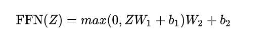

神经网络知识点总结
1.为什么需要非线性的激励函数？

如果hidden layer的激励函数是线性函数，那么可以看出这两层可以合并成新的一层，即和没有这个隐藏层直接输入没有什么区别。
对于有很多个hidden layer的深度神经网络来说，如果hidden layer的激励函数都是线性函数，那么这些隐藏层几乎都没有什么作用。
因此我们需要非线性函数来实现神经网络的功能。
2.为什么需要随机初始化？

如果将W全部初始化为0，在logistic regression中是可行的，但是在神经网络中这样会使得所有的隐藏层计算的函数都相同，无论经过多少次梯度下降这些隐藏层神经元计算的函数都是相同的，而我们需要不同的隐藏层单元来计算不同的函数，因此需要进行随机初始化。
随机初始化的方法：W[1] = np.random.randn((2, 2)) * 0.01
为什么要乘一个0.01？因为sigmoid和tanh函数在z很大或者很小的时候梯度都趋近于0，所以说应尽量使z的值比较小，这样进行梯度下降才能更快得学习。
3.手写前向传播？
先略过。
4.偏差（bias）和方差(variance)
高偏差解决方法：
1.更大的网络
2.Train larger
3.网络结构搜索
高方差解决方法：
1.更多的数据
2.正则化
3.网络结构搜索
5.正则化能减少overfitting的原因

解释一：
当一个神经网络出现high variance问题时，如果设置lambda为一个很大的值，则W会趋近于0，这样这个深度神经网络很多个神经元的 权值就几乎为0，也会导致这个神经网络变得很简单，简单的神经网络无法做出复杂的分类，因此会由high variance变为high bias。在这中间必然有某个lambda会使得整个神经网络工作just right。
解释二：
当lambda很大时，W很小，导致Z也很小，因此在激励函数tanh的线性区域内，整个神经网络几乎都在做线性计算，因此无法计算出复杂的decision boundry，自然也就无法拟合到过拟合那样复杂的decision boundary。
6.Dropout 理解

使用drop out方法来减少正则化，以相同的概率随机drop out掉每一个隐藏层的神经元。
这样相当于每次只使用一个小神经网络来进行训练。
有关keep_prob和scaling
设置keep_prob,这是保留每层的神经元的概率，keep_prob = 0.8表示要每个神经元有0.8的概率被保留。
对于l = 3的第三层来说，设置一个概率矩阵 d3 = np.random.rand(a3.shape[0], a3.shape[1]) < keep_prob。得到一个全部为True和Fales的矩阵，用这个矩阵和a3进行对应元相乘，a3 = np.multiply(a3, d3)
最后还需要scaling a3，令a3 = a3/keep_prob
最后一步的原因是我们只希望drop掉某些神经元，但并不希望改变a3的值，如果不进行scaling则最后a3的值会变小约20%，因此需要进行scaling。这种最后进行scaling的方法又叫inverted dropout
有关scaling：
简单讲就是：
训练有scale，测试不用管。
训练没scale，测试要乘p。
dropout起作用的原因：
dropout起作用的原因：试想对input进行dropout,则会有一些features被dropout掉，这使得输出无法过多得依赖某个特征，因此避免了overfitting
对于一个深度神经网络，我们可以对每一层设置不同的keep_prob,对于我们认为可能会导致dropout的层设置更小的keep_prob，对于认为不太会发生overfitting的层几乎不进行dropout，设置keep_prob为1
dropout的缺点：
使用dropout的一个缺点是我们的cost function J的抖动变大。
7.其他正则化
1.Data augmentation
2.early stopping
另一种方法是进行early stopping，在发现dev set error开始上升的时候停止训练，取这个时候的模型参数来阻止overfittiing。缺点是可能使cost function J没有优化到最优。
而当用L2 regularization的时候，缺点是要选择超参数lambda的值，需要很大的计算量。当计算能力足够的时候，L2 regularization会优于 early stopping。
8.输入标准化（Normalizing inputs）

通过左右对比可以发现，normalizing以后的输入，更有利于找到最优解，因此通过normalization可以使梯度下降更快得找到全局最优点。
9.梯度消失和梯度爆炸
梯度消失原因：
1.网络过深
2.采用了不合适的损失函数
梯度爆炸原因：
1.网络过深
2.权值初始化太大
从深层网络角度讲：从深层网络角度来讲，不同的层学习的速度差异很大，表现为网络中靠近输出的层学习的情况很好，靠近输入的层学习的很慢，有时甚至训练了很久，前几层的权值和刚开始随机初始化的值差不多。因此，梯度消失、爆炸，其根本原因在于反向传播训练法则，属于先天不足，可以考虑hinton提出的capsule网络。
从激活函数角度：


sigmoid和tanh函数的导数最大值都小于1，因此经过链式求导后，很容易发生梯度消失。
梯度爆炸解决方法：
梯度剪切，正则化（如果发生梯度爆炸，权值的范数就会变得非常大，而正则化项可以约束这一点）
而在深度神经网络中，往往梯度消失发生得更多一些
梯度消失解决方法：
1.修改激活函数
2.batchnorm，反向传播式子中有x的存在，而batchnorm规范了每一层的均值和方差，消除了x带来的放大缩小的影响，从而有助于解决梯度消失或梯度爆炸。
3.使用残差结构
10.Momentum，RMSprop，Adam方法
Momentum
当我们采用小的学习率的时候，会导致网络在训练的时候收敛太慢；当我们采用大的学习率的时候，会导致在训练过程中优化的幅度跳过函数的范围，也就是可能跳过最优点。我们所希望的仅仅是网络在优化的时候网络的损失函数有一个很好的收敛速度同时又不至于摆动幅度太大。
Momentum优化器可以解决这个问题，平均了此前积累的速度，降低了摆动幅度。

对于每次迭代中（对于mini-batch中的某个t）：
计算Vdw = βVdw + (1-β)dw
Vdb = βVdb + (1-β)db
在更新W和b时：利用公式Vθ = βVθt + （1 - β）θt
W = W - αVdw
b = b - αVdb
用Vdw和Vdb来更新W和b
相比于用dw和db来更新的好处：
取了前面若干dw和db的平均值来进行计算，比如在纵向，平均值为0，成功减小了纵向的学习速率，对于横向依然保持一个较快的学习速率。这样就使得学习更为平滑，从而加快了收敛。
对于公式的理解:
Vdw = βVdw + (1-β)dw
Vdb = βVdb + (1-β)db
其中dw,db可以认为是加速项，Vdw,Vdb看做速度，β小于1，可以用来防止速度无限增大
RMSprop
进一步优化了损失函数在更新中摆幅过大的问题，并进一步加快函数的收敛速度。

算法利用$S_{dw}$来表示前t-1轮迭代过程的梯度动量，当摆幅大的时候，$S_{dw}$就大，放在分母中，就更大程度得减少了W的更新，从而降低了摆幅。为了防止分母为0，加上了一个平滑数。
Adam
结合前面二者的优点。
假设在训练的第 tt 轮训练中，我们首先可以计算得到Momentum和RMSProp的参数更新：

由于移动指数平均在迭代开始的初期会导致和开始的值有较大的差异，所以我们需要对上面求得的几个值做偏差修正。

更新公式：

11.批标准化

推荐对z（即神经网络的直接输出，此时还没有经过激励函数）进行标准化。
批标准化实现：如图所示，先将z标准化为均值为0，方差为1的z_norm，再引入参数β，γ来调整z的均值和方差。β，γ利用梯度下降来进行更新。
在深度学习框架中，这些都被封装起来。
批标准化的作用：
1.提升了训练速度，使收敛速度大大加快
2.简化调参过程，对于参数初始化的要求降低，可以使用大的学习率
提升训练速度的原因：
a) 稳定学习效果。机器学习领域有个很重要的假设：IID独立同分布假设，就是假设训练数据和测试数据是满足相同分布的，这是通过训练数据获得的模型能够在测试集获得好的效果的一个基本保障。BatchNorm就是在深度神经网络训练过程中使得每一层神经网络的输入保持相同分布的。如果任由输入的分布变化而不加约束，网络就很难稳定得学习规律。
b) 加速收敛。因为深层神经网络在做非线性变换前的激活输入值（就是那个x=WU+B，U是输入）随着网络深度加深或者在训练过程中，其分布逐渐发生偏移或者变动，之所以训练收敛慢，一般是整体分布逐渐往非线性函数的取值区间的上下限两端靠近（对于Sigmoid函数来说，意味着激活输入值WU+B是大的负值或正值），所以这导致反向传播时低层神经网络的梯度消失，这是训练深层神经网络收敛越来越慢的本质原因，而BN就是通过一定的规范化手段，把每层神经网络任意神经元这个输入值的分布强行拉回到均值为0方差为1的标准正态分布，
12.Softmax

softmax的计算如图，当C=2，即只有两个类时，就退化为logistic函数。
loss函数的计算：

13. precision和recall，PR-曲线，ROC曲线与AUC值

$precision = \frac{TP}{TP+FP}$ $recall = \frac{TP}{TP+FN}$
从公式可以看出:
precision表示被检测为真的，有多少实际为真
recall表示实际为真的，有多少被检测到为真了
$F_1 = \frac{1}{\frac{1}{P}+\frac{1}{R}}$
但从precision和recall来看检测效果都是片面的，因此引入F1-score来综合考量这两个指标。
选取不同的阈值可以得到多组precision与recall，每组在P-R曲线上就是一个点，将这些点连接起来，就得到了P-R曲线。
ROC曲线：和P-R曲线的定义类似，首先引入两个变量。（TPR和recall的计算相同）
$TPR = \frac{TP}{TP+FN}$，$FPR = \frac{FP}{FP+TN}$
选取多个阈值，可以得到多组TPR和FPR的值。比如阈值0.6，则预测概率大于0.6的被分类为正类，小于0.6的被分类为负类，这样就可以计算所有样本的TP,FP,TN,FN。
得到了多组TPR，FPR后就可以做出ROC曲线，即ROC曲线上的每一个点都代表着一个不同的阈值。
极端分析：
TPR表示被正确预测出来的正例占所有正例的比例，FPR表示被错误预测为正例的样本占所有负例的比例，我们希望TPR越大越好，FPR越小越好。
当阈值为1时，没有样本被预测为正例，因此得到ROC曲线上的（0, 0）。
当阈值为0时，所有样本被预测为正例，因此得到ROC曲线上的（1, 1）。
理想情况下，TPR要接近1，FPR要接近0。

AUC值：AUC被定义为ROC曲线下的面积，一般ROC曲线都会分布在y=x这条曲线的上方，所以AUC的取值范围一般在0.5和1之间。可以使用AUC来判断这个分类器的性能。
AUC = 1，是完美分类器，采用这个预测模型时，存在至少一个阈值能得出完美预测。绝大多数预测的场合，不存在完美分类器。
0.5 < AUC < 1，优于随机猜测。这个分类器（模型）妥善设定阈值的话，能有预测价值。
AUC = 0.5，跟随机猜测一样（例：丢铜板），模型没有预测价值。
AUC < 0.5，比随机猜测还差；但只要总是反预测而行，就优于随机猜测。
简单来说，AUC值越大的分类器，分类效果越好。
问：为什么AUC值不受样本分布的影响？
观察TPR和FPR的定义可以知道，TPR的计算考虑的都是样本的实际正例，FPR的计算考虑的都是样本的实际负例，因此正负样本比例不均衡不影响ROC曲线，比如负样本增加到原来的10倍或者被随机丢弃一半，可以简单认为AUC值不变。但P-R曲线受到样本分布的影响较大。

a,c为ROC曲线，b,d为PR曲线。(a)和(b)展示的是分类其在原始测试集(正负样本分布平衡)的结果，(c)(d)是将测试集中负样本的数量增加到原来的10倍后，分类器的结果，可以明显的看出，ROC曲线基本保持原貌，而PR曲线变化较大。
14.mAP
mAP中的m表示mean，表示不同类别AP的平均值。首先对每个类别计算AP。
首先确定，mAP是衡量目标检测效果的一个指标。AP的计算要先计算precision和recall。
对于一个预测框来说，有两个阈值影响它的标记。一个是IOU_threshold，另一个是p_threshold。低于IOU_threshold的框我们认为是False Positive，高于IOU_threshold的框认为是True Positive。
而对于p_threshold，表示有多大的概率是某个类别，阈值以上的都是positive，阈值一下的都是negative。
根据预测结果与ground truth，可以计算每个positive框与ground truth的IoU，取最大的那个认为检测到了物体，在根据IoU阈值可以计算出true positive和false positive。可以得到各个类别的precision。
得到了true positive后，false negative表示漏检的目标，这个也是好计算的，也就可以得到recall。
现在已经得到了在一个确定的IoU_threshold和一个确定的p_threshold下的precision和recall。
为了得到P-R曲线，首先对预测结果按照置信度排序，给定一个rank，每个rank对应了一个p_threshold，就可以计算出不同p_threshold下的precision和recall，取这些recall下precision的平均值就作为AP。
将不同类别目标的AP取平均就得到了mAP。
14.决策树
ID3和C4.5决策树算法。
不同的算法有不同的依据来划分节点。ID3根据信息增益来划分节点，而C4.5根据信息增益率来划分节点。
信息熵定义：

信息增益定义：

其中,D为所有样本的集合，pk为样本集合D中第k类样本所占的比例，γ为样本类别数。
一般而言，信息增益越大，则意味着用属性a来进行划分所获得的“纯度提升”越大。
实际上，信息增益准则对可取值数目较多的属性有所偏好，因此C4.5不直接使用信息增益，而是从信息增益高于平均水平的属性中，选择增益率最高的一个。
增益率定义：

其中，

增益率对可取值数目较少的属性有所偏好
基尼指数
CART决策树使用基尼指数来选择划分属性。
CART是 Classification and Regression Tree的简称，分类和回归任务都可用。
基尼指数定义：

基尼指数反应了从数据集D中随机抽取两个样本，其类别标记不一致的概率，因此Gini(D)越小，则数据集D的纯度越高。
属性a的基尼指数定义为：

CART决策树在候选属性集合A中，选择那个使得划分后基尼指数最小的属性作为最优划分属性。
15. R-CNN, Fast R-CNN, Faster R-CNN
RCNN:
主要步骤：
- 输入测试图像
- 利用选择性搜索Selective Search算法在图像中从下到上提取2000个左右的可能包含物体的候选区域Region Proposal
- 因为取出的区域大小各自不同，所以需要将每个Region Proposal缩放（warp）成统一的227x227的大小并输入到CNN，将CNN的fc7层的输出作为特征
- 将每个Region Proposal提取到的CNN特征输入到SVM进行分类
缺点：要提取2000个region并且都要输入到CNN中进行特征提取，进行了大量的重复运算
Fast R-CNN:
与RCNN的对比
原来的方法：许多候选框（比如两千个）–>CNN–>得到每个候选框的特征–>分类+回归
现在的方法：一张完整图片–>CNN–>得到每张候选框的特征–>分类+回归
也就是说Fast R-CNN是对整张图做一次卷积，然后把候选框映射到feature map上，而不是对每个候选框都输入CNN做特征提取，减少了重复计算。并且直接使用神经网络来进行分类和回归，不再使用SVM。
Faster R-CNN:
Fast R-CNN存在的问题：存在瓶颈：选择性搜索，找出所有的候选框，这个也非常耗时。
解决方法：加入一个提取边缘的神经网络，也就说找到候选框的工作也交给神经网络来做了。
在Fast R-CNN中引入Region Proposal Network(RPN)替代Selective Search，同时引入anchor box应对目标形状的变化问题
具体做法：
• 将RPN放在最后一个卷积层的后面
• RPN直接训练得到候选区域

RPN简介：
• 在feature map上滑动窗口
• 建一个神经网络用于物体分类+框位置的回归
• 滑动窗口的位置提供了物体的大体位置信息
• 框的回归提供了框更精确的位置

R-CNN系列和yolo的区别：由于采用了region proposal，faster RCNN鲁棒性好精确性方面会好一些，也由于region proposal的耗时操作，导致其速度会比yolo，ssd更慢。
16.attention机制
attention作用：“去伪存真”，让任务处理系统更专注于找到输入数据中显著的与当前输出相关的有用信息，从而提高输出的质量。Attention模型的最终目的是帮助类似编解码器这样的框架，更好的学到多种内容模态之间的相互关系，从而更好的表示这些信息，克服其无法解释从而很难设计的缺陷。
深度学习中的注意力机制从本质上讲和人类的选择性视觉注意力机制类似，核心目标也是从众多信息中选择出对当前任务目标更关键的信息。
如图是encoder-decoder机制，要计算Hi时，利用Hi-1与encoder的各个部分输出来计算相似度（可以利用神经网络来算），最后经过softmax归一化后得到attention，这里的相似度计算就是衡量应该更加注重哪个部分。
17.强化学习中的马尔卡夫决策过程
马尔科夫假设：假设下一个状态相关的决策仅与上一个状态有关，而与之前的无关。
环境的状态转化模型：在状态s下采取动作a转移到下一个状态s‘的概率，用$P_{ss’}^{a}$来表示，利用马尔科夫假设，

策略π：

价值函数$v_π(s)$，也依据马尔科夫假设：

其中，Gt代表收获（return), 是一个MDP中从某一个状态StSt开始采样直到终止状态时所有奖励的有衰减的之和。
18.强化学习中的reward如何设计？
19.强化学习中的policy如何设计？
20.人脸识别中的loss
直接使用softmax对应的cross-entropy存在的问题：
1.Softmax训练的深度特征，会把整个超空间或者超球，按照分类个数进行划分，保证类别是可分的。 这一点对多分类任务如MNIST和ImageNet非常合适，因为测试类别必定在训练类别中
2.但Softmax并不要求类内紧凑和类间分离，这一点非常不适合人脸识别任务，因为训练集的1W人数， 相对测试集整个世界70亿人类来说，非常微不足道，而我们不可能拿到所有人的训练样本，更过分的是，一般我们还要求训练集和测试集不重叠。
3.所以需要改造Softmax，除了保证可分性外，还要做到特征向量类内尽可能紧凑，类间尽可能分离。
改进的loss：
Softmax + Contrastive Loss
通过Contrastive loss来使同类特征的L2距离尽可能小，不同类特征的L2距离大于margin（间隔） m
Triplet Loss
训练目标：
找到若干三元组，一张作为anchor，positive与anchor为同一个人，negative为随机的不同人脸。训练目标是使anchor与positive的距离在学习之后变小，anchor与negative的距离在学习之后变大。
Triplet Loss:
Center Loss
对每个类学习一个中心，并将每个类别的所有特征向量拉向对应类别中心。
学习效果：
将原本不好分开的类别拉开。
各种改进的loss虽然很多，但主要思想都是增大类间距离，减小类内聚类。
focal loss(实际使用的，face.evolve中用的loss)
人脸识别存在的问题：负样本数量太大，占总的loss的大部分，而且多是容易分类的，因此使得模型的优化方向并不是我们所希望的那样
因此针对类别不均衡问题，作者提出一种新的损失函数：focal loss，这个损失函数是在标准交叉熵损失基础上修改得到的。这个函数可以通过减少易分类样本的权重，使得模型在训练时更专注于难分类的样本。
其中，$α_t$为正负样本权重调制系数，当为正样本时，$α_t=a$，当为负样本时，$α_t=1-a$，因此通过调整a的值，可以调整正负样本在loss中占的权重。比如当正样本很多，可以取a为0-0.5之间的数，减少正样本对loss的贡献。
而$p_t$为预测值，如果$p_t$为0.9，表明这个样本为正样本的置信度很高，是容易分类样本；如果$p_t$为0.6，表明这个样本可能是正样本，但置信度不高，为难分类样本，通过在log前面加上$1-p_t$可以调整难分类样本对loss的贡献。
21.yolo细节
画出结构？
22.iou代码
1 | def iou(p1,p2,p3,p4): |
23.深度可分离卷积
怎么做？是否会带来性能损失？
根据inception net改进的结构， 将基本inception module替换为使用Depthwise Conv + Pointwise Conv ，进一步提升了计算效率。
- 1x1卷积，Pointwise Conv，用来学习不同channel之间的关联关系
- 3x3卷积，spatial convolution，即Depthwise Conv，用来学习单个channel内部空间的关联关系
这个结构由google提出，轻量级网络MobileNets即是基于这种结构。
24.DQN如何体现最大化reward?
首先明确，DQN是一种迭代算法，通过不断得迭代来求解最优policy。
先回顾使用Q表的Q-learning。
首先在状态s1采取行为a2到达状态s2，这时需要更新Q表的值，即更新一个新的Q(s1, a2)。
Q(s1,a2)现实是由实际奖励，加上一个衰减因子γ乘以Q（s2）所能获得的最大奖励，在这里为在s2下选取a2时候的奖励2。
利用现实-估计得到差值，按照更新公式来得到新的Q（s1,a2）。
此时还没有在s2的时候做出行为。
Q-learning整体算法：

可以看出，Q-learning是一种不断做出行为，不断修改Q表的算法。（迭代）
说回DQN：

DQN是为了解决Q表过大的问题，用神经网络来代替Q表。用Q-learning的思路来说，就是通过最小化$Q_{现实}-Q_{估计}$来迭代出最优的policy。和policy gradient这种通过最大化奖励的方式来得到最优policy的方式有所区别。
25.Transformer结构
可参考知乎文章“《详解Transformer （Attention Is All You Need）》“
Transformer中抛弃了传统的CNN和RNN，整个网络结构完全是由Attention机制组成。更准确地讲, Transformer由且仅由self-Attenion和Feed Forward Neural Network组成。一个基于Transformer的可训练的神经网络可以通过堆叠Transformer的形式进行搭建，作者的实验是通过搭建编码器和解码器各6层，总共12层的Encoder-Decoder，并在机器翻译中取得了BLEU值得新高。
看了淘宝和美团将transformer结构用于推荐系统的文章，发现都只采用了encoder部分，利用了transformer结构中内置的attention部分，来做特征的高阶组合、学习特征之间的交叉关系等。可以用在特征工程，行为序列建模，重排序，预测用户u点击item vt的概率等。
transformer结构：
1.整体结构
2.encoder-decoder结构


可以看到，encode结构包括了一个self-attention和FFN。
其中：
有关Q，K，V见下方

decoder结构：
输入：

self-attention：
- 如上文，将输入单词转化成嵌入向量；
- 根据嵌入向量得到
，
，
三个向量；
- 为每个向量计算一个score：
；
- 为了梯度的稳定，Transformer使用了score归一化，即除以
；
- 对score施以softmax激活函数；
- softmax点乘Value值
- 相加之后得到最终的输出结果
：
。

矩阵：

attention公式矩阵形式：

encoder内部的残差结构：

采用multi-head attention的形式：
Multi-Head Attention相当于 个不同的self-attention的集成（ensemble），在这里我们以
举例说明。Multi-Head Attention的输出分成3步：
- 将数据
分别输入到图13所示的8个self-attention中，得到8个加权后的特征矩阵
。
- 将8个
按列拼成一个大的特征矩阵；
- 特征矩阵经过一层全连接后得到输出
。
完整结构：

在谷歌论文中，由于transformer结构没有捕捉顺序结构的能力，因此还引入了位置编码：

参考文献：
- 吴恩达 deeplearning 课程
- @zhwhong, “机器学习之分类性能度量指标 : ROC曲线、AUC值、正确率、召回率“
- @刘建平Pinard, “强化学习（二）马尔科夫决策过程(MDP)”
- @YaqiLYU, “人脸识别的LOSS（上）“
- @莫烦python, “什么是Q-learning“
本文链接：http://clownw.github.io/%E7%A5%9E%E7%BB%8F%E7%BD%91%E7%BB%9C%E6%80%BB%E7%BB%93/